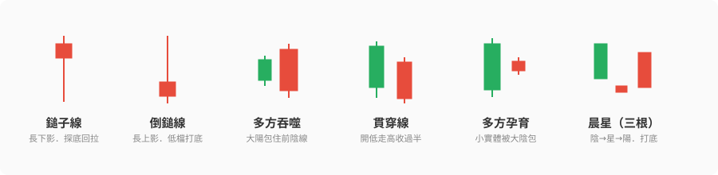
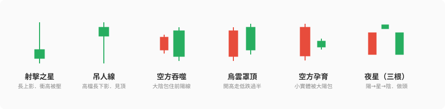
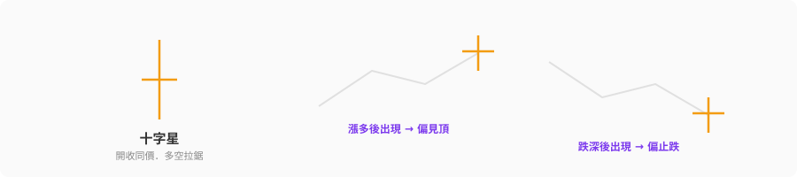

看盤時常聽到「出現鎚子線、要反彈了」「收了烏雲罩頂、小心回檔」——這些都是 K 線反轉型態。這篇把常見的反轉訊號一次整理清楚：它們長什麼樣、代表什麼、可靠度如何，最後講三個「比背型態更重要」的實戰原則。
先講心法：K 線型態是「提示」不是「預言」。 它告訴你「這裡多空力量可能在轉變」，但會不會真的轉、要搭配位置和後續確認。別把它當聖杯。
什麼是「反轉型態」？
反轉型態是指趨勢可能要掉頭的 K 線組合，分兩大類：
- 底部反轉（看漲）：出現在下跌末端，暗示跌勢可能止住、要反彈。
- 頂部反轉（看跌）：出現在上漲末端，暗示漲勢可能到頂、要回落。
關鍵字是「末端」——同一個形狀，出現在趨勢末端才有反轉意義，出現在半路可能只是雜訊。
📈 底部反轉型態（看漲）
這些出現在跌勢末端時，暗示可能打底（下圖以台股習慣呈現：紅＝陽線、綠＝陰線）：
| 型態 | 長相 | 幾根 | 可靠度 |
|---|---|---|---|
| 鎚子線 | 長下影線、小實體，像探底被拉回 | 1 根 | 中 |
| 倒鎚線 | 長上影線、小實體（低檔版的射擊之星） | 1 根 | 中 |
| 多方吞噬 | 大陽線完全包住前一根陰線 | 2 根 | 中高 |
| 貫穿線 | 陰線後，陽線開低走高、收復前一根一半以上 | 2 根 | 中高 |
| 多方孕育 | 大陰線後一根小實體被包在裡面，跌勢趨緩 | 2 根 | 中 |
| 晨星 | 陰線 → 小星 → 陽線，三根打底 | 3 根 | 高 |
| 紅三兵 | 連三根陽線步步墊高 | 3 根 | 高 |

白話記法：底部反轉的共通精神是「跌不下去了」——不是長下影線撐住（鎚子），就是買盤一口氣吃回賣方（吞噬、貫穿），或是連續收紅宣告多方接管（紅三兵、晨星）。
📉 頂部反轉型態（看跌）
這些出現在漲勢末端時，暗示可能見頂。它們幾乎是底部型態的「鏡像」：
| 型態 | 長相 | 幾根 | 可靠度 |
|---|---|---|---|
| 射擊之星 | 長上影線、小實體，衝高被打回 | 1 根 | 中 |
| 吊人線 | 長下影線、小實體（高檔版的鎚子） | 1 根 | 中 |
| 空方吞噬 | 大陰線完全包住前一根陽線 | 2 根 | 中高 |
| 烏雲罩頂 | 陽線後，陰線開高走低、跌破前一根一半以下 | 2 根 | 中高 |
| 空方孕育 | 大陽線後一根小實體被包住，漲勢趨緩 | 2 根 | 中 |
| 夜星（一星二陰） | 陽線 → 小星 → 陰線，三根做頭 | 3 根 | 高 |
| 黑三兵 | 連三根陰線步步走低 | 3 根 | 高 |

白話記法：頂部反轉的共通精神是「漲不上去了」——衝高被壓回（射擊之星）、賣盤吃掉買方（空方吞噬、烏雲罩頂）、或連續收黑宣告空方接管（黑三兵、夜星）。
⭐ 特別的一個：十字星（雙向）
十字星是開盤收盤幾乎同價、實體極小的 K 棒，代表多空拉鋸、僵持不下。它本身沒有方向，要看位置：

- 出現在漲多之後 → 偏向見頂警訊
- 出現在跌深之後 → 偏向止跌警訊
- 出現在盤整中 → 沒意義，只是觀望
三個比「背型態」更重要的實戰原則
認得型態只是第一步。真正用得好，靠這三件事：
1. 看「位置」，不只看形狀
同一個形狀，位置不同意義相反。 最經典的例子：
- 鎚子線（長下影）出現在低檔＝打底訊號（看漲）
- 一模一樣的形狀出現在高檔，叫吊人線＝見頂警訊（看跌）
射擊之星和倒鎚線也是這組關係。所以別只看「長怎樣」，要看「出現在哪」。
2. 要「等確認」，別看到就衝
反轉型態只是說「可能要轉」，不是「一定會轉」。單一根訊號的假訊號很多。實務上會等下一根 K 棒確認：
- 看到底部鎚子，隔天收紅、站上鎚子高點，才算確認。
- 看到頂部射擊之星，隔天收黑、跌破當根低點，才算確認。
寧可慢一步買在確認後，也別搶在假訊號上。
3. 可靠度：三根 > 兩根 > 一根
一般來說：
- 三根組合（晨星/夜星/紅三兵/黑三兵）最可靠——需要連續動作佐證。
- 兩根組合（吞噬/貫穿/烏雲/孕育）次之。
- 單根型態（鎚子/射擊之星/十字星）最弱——很容易是雜訊，務必配合位置與確認。
小結
- 反轉型態分兩類：底部反轉（看漲）出現在跌勢末端、頂部反轉（看跌）出現在漲勢末端。
- 底部記「跌不下去」：鎚子、吞噬、貫穿、孕育、晨星、紅三兵。
- 頂部記「漲不上去」：射擊之星、吊人、空方吞噬、烏雲罩頂、夜星、黑三兵。
- 十字星是雙向的拉鋸訊號，看位置決定偏多偏空。
- 三個鐵則：看位置（同形狀不同位置意義相反）、等確認（別搶假訊號）、三根比一根可靠。
- 最重要的一句：K 線型態是風險提示，不是進出聖杯——它幫你「在相對位置提高警覺」，不是拿來頻繁交易賺價差。
認得這些型態，能讓你看盤時多一雙眼睛，知道「這裡多空可能在換手」。但別忘了前面幾篇的結論——長期致勝靠的是選股、本金與紀律，型態只是輔助的風險提示而已。 🐾
延伸閱讀
本文為個人學習與技術分析觀念整理，所有型態說明均為一般性知識，不代表任何標的的買賣建議。K 線型態有假訊號風險，須搭配其他分析與風險控管，非投資建議。投資有風險，請獨立判斷 🐾